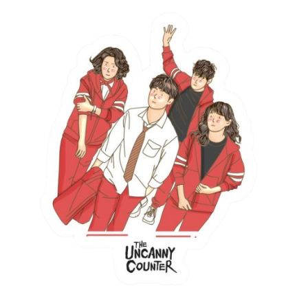

경이로운 소문
WELCOME TO THE UNCANNY COUNTER WORLD
Lets all explore the world of demon hunters and the supernatural adventures. Discover their stories, special abilities, friendships, and battles as they protect the people from evil spirits and fight to bring justice to those who need it.
Discover More
ABOUT US
The Uncanny Counter is a Korean drama (K-drama) series inspired by the webtoon Amazing Rumor. The story follows a group of demon hunters known as the Counters, who disguise themselves as noodle restaurant employees while protecting people from evil spirits.
With their unique powers, strong teamwork, and unforgettable personalities, the Counters face powerful supernatural enemies while uncovering the mysteries behind their own pasts. The series combines action, fantasy, mystery, comedy, and emotional moments, making it an exciting story for fans of supernatural adventures
Read MoreMEET THE MAIN CHARACTERS
Each Counter has unique abilities and a personal reason for fighting evil. Their teamwork, courage, and loyalty make them a powerful team.
So Mun
So Mun is the youngest member of the Counters and the main protagonist of the story. He is brave, caring, and determined to protect his loved ones and innocent people.
Read MoreDo Ha-na
Do Ha-na is a skilled Counter with the ability to sense and read people's memories through physical contact. She is quiet, serious, and observant.
Read MoreChu Mae-ok
Chu Mae-ok is the oldest member of the Counters and serves as the team's healer. She is kind, caring, and motherly toward the other Counters.
Read MoreChoi Jang-mul
Choi Jang-mul is the wealthy supporter and financial manager of the Counters. He provides resources and support for their missions.
Read MoreTHE SEASONS
Explore the supernatural adventures, powerful enemies, and unforgettable moments of The Uncanny Counter.
Season 1: 16 episode
2020
The first season introduces So Mun as the youngest Counter and follows his journey as he discovers his supernatural abilities. Together with Do Ha-na, Chu Mae-ok, and Ga Mo-tak, he fights evil spirits while uncovering mysteries connected to his past.
- Introduces the Counters
- So Mun discovers his powers
- Fights powerful evil spirits
- Focuses on friendship and teamwork
Season 2: 12 episode
2023
The second season brings the Counters into new battles against stronger and more dangerous evil spirits. With new challenges and enemies, the team must improve their abilities and work together to protect innocent people.
- New supernatural enemies
- Stronger abilities and challenges
- New characters and conflicts
- More action and emotional moments